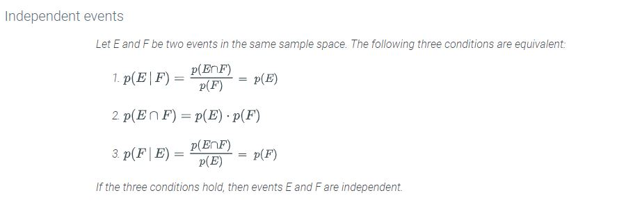

The probability of an event E happening in sample space S is known. Then an event F happens. This is how you find out what the likelyhood of E is AFTER F has happened.
For example: Say you are rolling dice and want to know the likely hood that the total is at
least 10 (event E). That set is {(4,6), (6,4) (5,5), (5,6), (6,5), (6,6)}.
You roll the first die and it comes up 5 (event F). Now what is the likelyhood that the total
is at least 10?
Event F is the likleyhood that the roll came up 5, so 1/6.
To find the Conditional Probability of this event, use the following formula:
So we know
and
.
Two events are independent if conditioning on one event does not change the
probability of the other event.
